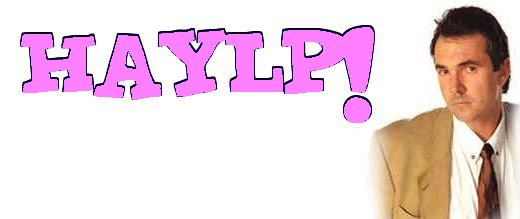

|  G'day folks, Karl Kennedy here. Seems you poms have got a few nasty problems over there right now. I've selected the most serious ones for this page - hope it'll help you all. We start with this beaut little letter that got pushed through the door here at YS3 HQ. Strange. Dear Doc Karl, I saw how you helped that Elvic guy in the last issue and I hope you can do the same for me. My problem is this: I'm addicted to pastries and I keep stealing them from my workplace. I think my colleagues are on to me - I keep finding they drop hints about going down to the shops to buy more. Even worse is the fact that I'm not even eating them all any more. Sometimes I just steal them because something tells me to. What can I do? Haylp! Anon Doc Karl replies: I see from the crumbs sticking to your envelope that you do have a real problem. It's odd, I feel like I've seen more like that recently. They smell slightly of toffee. But back to your problem. First, congratulations on acknowledging that stealing pastries from your colleagues is not a good thing. Not only are you depriving them of a tasty snack, but it's certain to be having a bad effect on your body and your character. You're going to get fat and you might end up stealing other things compulsively as well. So here's what I suggest you do: come clean to your colleagues and they should hopefully be understanding. Once you've got their support, you should visit your local Stealers of Kipling Cakes Society, or SOKCS. They'll put you on an intensive programme which should hopefully cure your addiction. Good luck mate! I can't help feeling there's something odd about this letter. It seems very familiar, but I can't put my finger on it. (Hmm... I don't remember this one coming in the post. Jamie.) On to our next letter. This came by email. Here we go. Dear Doc Karl, Please haylp me. I can't write to any other doctor nationally because they'll sell my story to the papers. Recently I was out and about when I was hit by an egg, and I hit the man responsible. Then everyone started making fun of me, calling me things like 'Two Jabs'. Now my boss is saying that he's going to sack me and that I've let down my country. What can I do to keep my job? Haylp me, please! JP, London Doc Karl replies: Go away, egghead. Us Docs always respect patient confidentiality, but not idiots like you. (Hey, that's not very nice. Phil) And you can go toast yourself on a barbie, you flamin' prawn. (Oi! Phil) I'm getting a headache. Any more idiots want to write to me next month, forget it. Anyone who wants a real prob answering, write to me, Doc Karl, at haylp@ys3.co.uk See ya next time. |